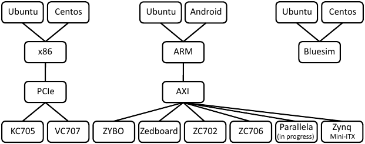

In and of themselves, none of the HW/SW interfaces considered in Section Accelerating String Search are particularly complex. On the other hand, implementing the complete set and maintaining correctness as the application evolves is a considerable amount of care, requiring deep understanding of both the application and the platform. The Connectal framework is a collection of tools and library components which was designed to address these challenges with the following features:
In this section, we introduce the Connectal framework through a discussion of its prominent features.
Connectal implements remote method invocation between application components using asynchronous messaging. The message and channel types are application specific, requiring the user to define the HW/SW interface using BSV interfaces as the interface definition language (IDL). These interfaces declare logical groups of unidirectional ``send’’ methods, each of which is implemented as a FIFO channel by the Connectal interface compiler; all channels corresponding to a single BSV interface are grouped together into a single portal.
From the interface specification, the Connectal interface compiler generates code for marshalling the arguments of a method into a message to be sent and unmarshaling values from a received message. It generates a textit{proxy} to be invoked on the sending side and a textit{wrapper} that invokes the appropriate method on the receiving side. Platform specific libraries are used to connect the proxies and wrappers to the communication fabric.
In the hardware, each portal is assigned a disjoint address range. On the host, Connectal assigns each portal a unique Linux device (/dev/portal*n*$) which is accessed by the application software using the generated wrappers and proxies. An application can partition methods across several portals, to control access to the interfaces by specific hardware or software modules. To support bi-directional communication, at least two portals are required: one which allows software to ``invoke’’ hardware, and another for hardware to ``invoke’’ software. Each portal may be accessed by different threads, processes, or directly from the kernel.
We designed Connectal to provide direct access to accelerators from user-mode programs in order to eliminate the need for device-drivers specific to each accelerator. We have implemented a kernel module for both X86 and ARM architectures with a minimal set of functionality: the driver implements textbf{mmap} to map hardware registers into user space and textbf{poll} to enable applications to suspend a thread waiting for interrupts originating from the hardware accelerators. These two pieces of functionality have been defined to be completely generic; no modification is required to kernel drivers as the HW/SW interface evolves. All knowledge of the interface register semantics (and corresponding changes) is encoded by the interface compiler in the generated proxies and wrappers which are compiled as part of the application and executed in user-mode.
This approach is known as user-space device drivers~cite{Khalidi:1995:EZI:974947,UIO:Howto} and has a number of distinct advantages over traditional kernel modules. To begin with, it reduces the number of components that need to be modified if the HW/SW interface changes, and eliminates the need for device-driver development expertise in many cases. Secondly, after the hardware registers have been mapped into user address space, the need for software to switch between user and kernel mode is all but eliminated since all ``driver’’ functionality is being executed in user-space.
When building accelerators for an algorithm, multiple parameters are often accessed directly from system memory using DMA. As the hardware implementation is parallelized, multiple accesses to each parameter may be required. In these cases, the number of memory clients in the application hardware usually exceeds the number of host memory ports. Sharing these ports requires substantial effort, and scaling up a memory interconnect while maximizing throughput and clock speed is extremely challenging.
To support this common design pattern, the Connectal framework provides provides a portable, scalable, high performance library that applications can use to to facilitate the efficient sharing of host memory ports. This library is implemented as parameterized Bluespec modules which allow the user to easily configure high-performance memory access trees, supporting both reading and writing.
We structured Connectal to improve the portability of applications across CPU types, operating systems, FPGAs, and how the CPU and FPGA are connected. The software and hardware libraries are largely platform independent. As a result, applications implemented in the framework can be compiled to run on the range of different platforms.
Supported platforms are shown in Figure Fig-platforms. Application software can be executed on x86 and ARM CPUs running either Ubuntu or Android operating systems. A range of different Xilinx FPGAs can be connected to the CPU and system memory via PCI Express or AXI. The BSV simulator (Bluesim) can be used in place of actual FPGA hardware for debugging purposes.
When the target application needs to interact with other Linux kernel resources (for example, a block device or a network interface), the application may run in kernel mode with the logic run either in an FPGA or in Bluesim.
